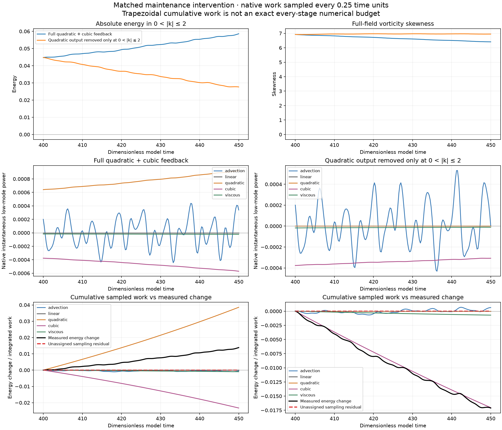

Completed on Unity · 512² · dimensionless t = 400–450
What maintains the large vortices?
Two continuations start from exactly the same mature polynomial-feedback flow at t = 400. The full control retains the original source. The second case removes only the quadratic source contribution to 0 < |k| ≤ 2, leaving cubic saturation and every other term unchanged.
Left: full quadratic and cubic feedback. Right: quadratic output removed only at 0 < |k| ≤ 2. All 101 saved states, every 0.5 model time units, at 6 frames/s (16.83 seconds). Time is dimensionless, not Earth days. This horizontal 2D model has one vorticity plane and no tracer or vertical layers.
One fixed shared symmetric asinh scale, linear width 0.1 and limits ±10.55056, spans all extrema across both cases and the entire movie. No clipping or per-frame rescaling. The poster shows t = 450.
The controlled result
Energy in the largest retained modes grows in the full model and declines when their direct quadratic input is removed. Strong positive vorticity skewness remains in both cases. The intervention therefore separates large-scale energetic reinforcement from persistence of the imposed sign preference.
| Quantity | Shared t = 400 state | Full control, t = 450 | Quadratic low-mode removal, t = 450 |
|---|---|---|---|
| Energy in 0 < |k| ≤ 2 | 0.04474866 | 0.05857908 | 0.02765022 |
| Largest-mode energy / initial value | 1 | 1.309069 | 0.617901 |
| Change in largest-mode energy | 0 | +0.01383041 | −0.01709844 |
| Total kinetic energy | 0.06220477 | 0.08179397 | 0.04938489 |
| Vorticity skewness | +6.9210 | +6.4118 | +6.9496 |
Values are taken from the completed Unity report. For positive f, positive vertical vorticity is cyclonic in the right-handed east–north–up coordinate convention.
This is a maintenance intervention on an existing state. It establishes that the prescribed quadratic input supports growth of the largest modes over this interval. It does not establish spontaneous formation, an inverse cascade, a single surviving vortex, or a derivation of the source from convection. Direct transfer from convective fluctuations into large scales can be physically legitimate; removing it is a diagnostic intervention rather than a requirement that every physical model must survive.
Where the largest-mode energy goes
The table separates the accumulated contributions over t = 400–450. The quadratic term directly reinforces the largest modes in the full case. In the modified case, the positive accumulated advective contribution is too small to offset cubic and viscous losses.
| Contribution to largest-mode energy | Full control | Quadratic low-mode removal |
|---|---|---|
| Quadratic source work | +0.03856320 | +2.65 × 10⁻¹⁹ |
| Cubic source work | −0.02325157 | −0.01703781 |
| Advective transfer | −0.00049778 | +0.00063622 |
| Viscous loss | −0.00098366 | −0.00069771 |
| Linear instability source work | −6.17 × 10⁻²¹ | −8.08 × 10⁻²² |
| Measured energy change | +0.01383041 | −0.01709844 |
| Final unassigned residual | +2.2763 × 10⁻⁷ | +8.6380 × 10⁻⁷ |
| Maximum absolute residual during interval | 4.9342 × 10⁻⁶ | 4.7794 × 10⁻⁶ |
Native instantaneous tendency work is sampled every 0.25 model time units and integrated by the trapezoidal rule. The residual is the measured endpoint energy change minus those accumulated contributions. These small residuals document sampled accounting; they are not a claim of exact integration at every numerical stage. The linear instability source acts in 12 ≤ |k| ≤ 16, so its largest-mode work is zero to numerical precision.

Precisely what changed
Let P₀ remove the spatial mean and PL retain 0 < |k| ≤ 2. Write Q₂ = P₀(bfζ²) and Q₃ = −P₀(cζ³). The full model uses Q₂ + Q₃. The intervention uses (I − PL)Q₂ + Q₃. Cubic saturation remains active at every scale, and the quadratic source remains active outside the removed band.
Both cases use a 512 × 512 periodic 2π × 2π domain, ordinary viscosity ν = 10⁻⁴, f = +1, b = 0.002 and c = 0.0002. The original instability forcing has multiplier a|k|² in 12 ≤ |k| ≤ 16 with a = 0.0002 and excludes kx = 0. The parameter f labels the sign in the polynomial source; these are dimensionless horizontal 2D experiments. There is no beta, additional velocity drag, hyperviscosity or resolved moist convection.
The common checkpoint is the completed positive-f polynomial case at t = 400. Pre-run checks verified equivalence of the full control to the original model, the intended spectral removal, conservative curl reconstruction, native tendency work, restart behavior and output timing. Independent checks at t = 400, 425 and 450 recover source work from saved fields with maximum absolute differences below 10⁻¹². The synchronized movie passed full decoding and frame-count checks on Unity.
Files and related experiments
Completed numerical report · Full-control scalar history · Modified-case scalar history
Protocol and validation · Source code · Adversarial literature review
Earlier polynomial evolution, t = 0–400 · Separate nonlinear-stress experiment